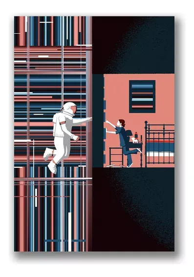

Interstellar
- Nombre: Interstellar
- Año de publicación: 2014
- Productor/Editorial: Warner Bros. Pictures, Legendary Pictures
- 
- Reseña: Interstellar es una película de ciencia ficción dirigida por Christopher Nolan. La trama sigue a un grupo de astronautas que viajan a través de un agujero de gusano en busca de un nuevo hogar para la humanidad. La película aborda temas como el tiempo, el espacio y las relaciones humanas de una manera emocionante y visualmente impactante.
- Calificación: ⭐️⭐️⭐️⭐️⭐️